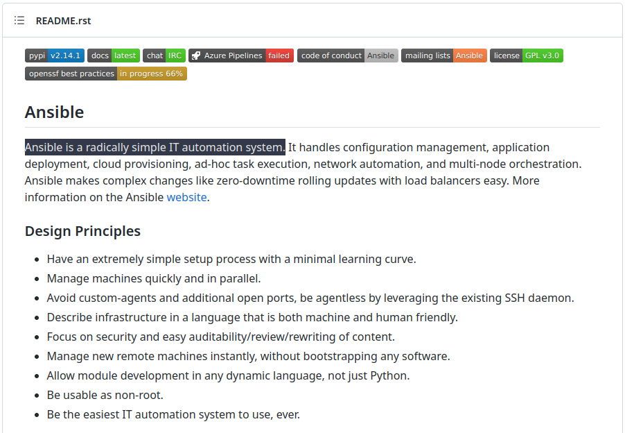
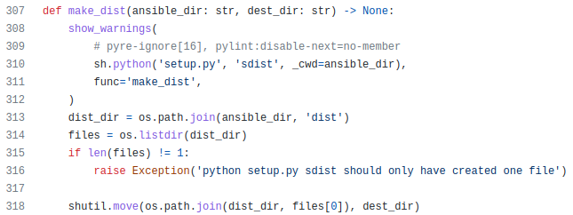
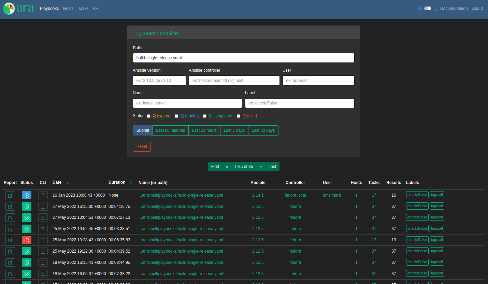
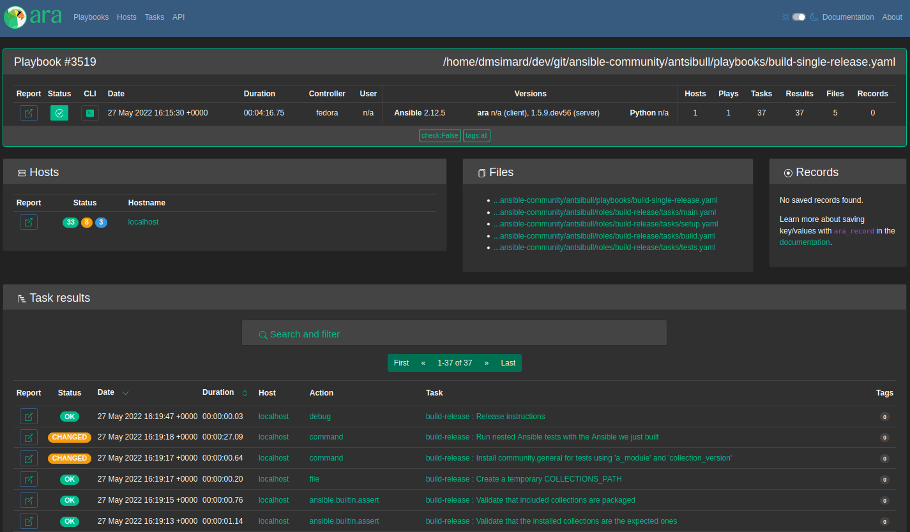

Recording Ansible
building ansible with Ansible
& testing it with Ansible
David Moreau-Simard (fosstodon.org/@rfc2549)
Config Management Camp 2023
$ whoami
---
- name: David Moreau-Simard
hosts:
- dmsimard:matrix.org
- fosstodon.org/@rfc2549
vars:
location: Montreal, Canada (or rabbit holes)
profile: sysadmin, dev/ops, CI/CD, SRE
roles:
- Ansible user since version 1.8 or so (2014?)
- Previously in the Ansible community team @ Red Hat
- Part time open source contributor (between dev ops and dad ops)About this presentation
- You can try this at home and even help improve it: it's open source 🎉
- Not exhaustive: meant as a high level overview with references to explore
- Happy to chat about it, feel free to reach out !
Ansible
https://github.com/ansible/ansible/blob/devel/README.rst
Configuration management with Ansible
- name: Setup nginx
hosts: web01
become: true
handlers:
- name: Restart nginx
service:
name: nginx
state: restarted
tasks:
- name: Install nginx
package:
name: nginx
state: present
- name: Configure virtual host
template:
src: vhost.conf.j2
dest: /etc/nginx/conf.d/service.conf
notify:
- Restart nginx
- name: Ensure nginx is started
service:
name: nginx
state: started
enabled: trueOther use cases
https://www.youtube.com/watch?v=TVq88JeJbw4
<3 geerlingguy
ansible
Includes ansible-core and is a batteries-included package that provides a curated set of Ansible collections
https://pypi.org/project/ansible/
ansible-core
Contains the base engine and a small subset of modules and plugins
Provides the CLIs for: ansible, ansible-doc, ansible-inventory, ansible-playbook, ansible-galaxy, ansible-test
https://pypi.org/project/ansible-core/
Can we build ansible with Ansible ?
What could go wrong ?
¯\(ツ)/¯
Building a python source distribution package
Doing it manually
$ git clone https://github.com/ansible/ansible ~/src/ansible
$ cd ~/src/ansible; python3 setup.py sdist
$ ls dist/
ansible-core-2.15.0.dev0.tar.gz # <-- ansible-core !Doing it with Ansible
- name: Clone the ansible repository
git:
repo: https://github.com/ansible/ansible
dest: "{{ '~/src/ansible' | expanduser }}"
- name: Build a distribution package
command: python3 setup.py sdist
args:
chdir: "{{ '~/src/ansible' | expanduser }}"
creates: "{{ '~/src/ansible' | expanduser }}/dist/ansible-core-2.15.0.dev0.tar.gz"Why ?

https://xkcd.com/1319/
Building a python source distribution package
Doing it manually
$ git clone https://github.com/ansible/ansible
fatal: destination path 'ansible' already exists and is not an empty directory.Doing it with Ansible
TASK [Clone the ansible repository] *****************************************************************************************************
ok: [localhost]
TASK [Build a distribution package] *****************************************************************************************************
ok: [localhost]
PLAY RECAP ******************************************************************************************************************************
localhost : ok=2 changed=0 unreachable=0 failed=0 skipped=0 rescued=0 ignored=0What about the ansible package ?
$ wget https://files.pythonhosted.org/packages/05/cd/d5c46caa5d8c6c11ebad76accd2cec355a10ba80c71780ecdf0bc6748a62/ansible-7.1.0.tar.gz
$ tar -xzf ansible-7.1.0.tar.gz
$ tree -L 1 ansible-7.1.0
ansible-7.1.0
├── ansible_collections # included collections ("batteries included")
├── ansible.egg-info
├── build-ansible.sh # intended to rebuild the package
├── CHANGELOG-v7.rst # aggregated changelog from every collection
├── COPYING
├── debian
├── MANIFEST.in
├── PKG-INFO
├── porting_guide_7.rst # aggregated porting guide from every collection
├── README.rst
├── setup.cfg
└── setup.py
3 directories, 9 filesInside ansible_collections
$ tree -L 2 ansible-7.1.0/ansible_collections/
ansible-7.1.0/ansible_collections/
├── amazon
│  └── aws
├── ansible
│  ├── netcommon
│  ├── posix
│  ├── utils
│  └── windows
├── ansible_community.py
├── ansible_release.py
├── arista
│  └── eos
├── awx
│  └── awx
├── azure
│  └── azcollection
├── check_point
│  └── mgmt
├── chocolatey
│  └── chocolatey
├── cisco
│  ├── aci
│  ├── asa
│  ├── dnac
│  ├── intersight
│  ├── ios
│  ├── iosxr
│  ├── ise
│  ├── meraki
│  ├── mso
│  ├── nso
│  ├── nxos
│  └── ucs
├── cloud
│  └── common
├── cloudscale_ch
│  └── cloud
├── community
│  ├── aws
│  ├── azure
│  ├── ciscosmb
│  ├── crypto
│  ├── digitalocean
│  ├── dns
│  ├── docker
│  ├── fortios
│  ├── general
│  ├── google
│  ├── grafana
│  ├── hashi_vault
│  ├── hrobot
│  ├── libvirt
│  ├── mongodb
│  ├── mysql
│  ├── network
│  ├── okd
│  ├── postgresql
│  ├── proxysql
│  ├── rabbitmq
│  ├── routeros
│  ├── sap
│  ├── sap_libs
│  ├── skydive
│  ├── sops
│  ├── vmware
│  ├── windows
│  └── zabbix
├── containers
│  └── podman
├── cyberark
│  ├── conjur
│  └── pas
├── dellemc
│  ├── enterprise_sonic
│  ├── openmanage
│  ├── os10
│  ├── os6
│  └── os9
├── f5networks
│  └── f5_modules
├── fortinet
│  ├── fortimanager
│  └── fortios
├── frr
│  └── frr
├── gluster
│  └── gluster
├── google
│  └── cloud
├── grafana
│  └── grafana
├── hetzner
│  └── hcloud
├── hpe
│  └── nimble
├── ibm
│  ├── qradar
│  └── spectrum_virtualize
├── infinidat
│  └── infinibox
├── infoblox
│  └── nios_modules
├── inspur
│  ├── ispim
│  └── sm
├── junipernetworks
│  └── junos
├── kubernetes
│  └── core
├── lowlydba
│  └── sqlserver
├── mellanox
│  └── onyx
├── netapp
│  ├── aws
│  ├── azure
│  ├── cloudmanager
│  ├── elementsw
│  ├── ontap
│  ├── storagegrid
│  └── um_info
├── netapp_eseries
│  └── santricity
├── netbox
│  └── netbox
├── ngine_io
│  ├── cloudstack
│  ├── exoscale
│  └── vultr
├── openstack
│  └── cloud
├── openvswitch
│  └── openvswitch
├── ovirt
│  └── ovirt
├── purestorage
│  ├── flasharray
│  ├── flashblade
│  └── fusion
├── sensu
│  └── sensu_go
├── splunk
│  └── es
├── theforeman
│  └── foreman
├── t_systems_mms
│  └── icinga_director
├── vmware
│  └── vmware_rest
├── vultr
│  └── cloud
├── vyos
│  └── vyos
└── wti
└── remote
152 directories, 2 filesInside a collection: community.general
$ tree -L 3 ansible-7.1.0/ansible_collections/community/general
ansible-7.1.0/ansible_collections/community/general/
├── CHANGELOG.rst
├── CHANGELOG.rst.license
├── changelogs
│  ├── changelog.yaml
│  ├── changelog.yaml.license
│  ├── config.yaml
│  └── fragments
├── commit-rights.md
├── CONTRIBUTING.md
├── COPYING
├── docs
│  └── docsite
│  ├── extra-docs.yml
│  ├── helper
│  ├── links.yml
│  └── rst
├── FILES.json
├── LICENSES
│  ├── BSD-2-Clause.txt
│  ├── GPL-3.0-or-later.txt
│  ├── MIT.txt
│  └── PSF-2.0.txt
├── MANIFEST.json
├── meta
│  └── runtime.yml
├── plugins
│  ├── action
│  │  ├── iptables_state.py
│  │  └── shutdown.py
│  ├── become
│  │  ├── doas.py
│  │  ├── dzdo.py
│  │  ├── ksu.py
│  │  ├── machinectl.py
│  │  ├── pbrun.py
│  │  ├── pfexec.py
│  │  ├── pmrun.py
│  │  ├── sesu.py
│  │  └── sudosu.py
│  ├── cache
│  │  ├── memcached.py
│  │  ├── pickle.py
│  │  ├── redis.py
│  │  └── yaml.py
│  ├── callback
│  │  ├── cgroup_memory_recap.py
│  │  ├── context_demo.py
│  │  ├── counter_enabled.py
│  │  ├── dense.py
│  │  ├── diy.py
│  │  ├── elastic.py
│  │  ├── hipchat.py
│  │  ├── jabber.py
│  │  ├── loganalytics.py
│  │  ├── logdna.py
│  │  ├── logentries.py
│  │  ├── log_plays.py
│  │  ├── logstash.py
│  │  ├── mail.py
│  │  ├── nrdp.py
│  │  ├── null.py
│  │  ├── opentelemetry.py
│  │  ├── say.py
│  │  ├── selective.py
│  │  ├── slack.py
│  │  ├── splunk.py
│  │  ├── sumologic.py
│  │  ├── syslog_json.py
│  │  ├── unixy.py
│  │  └── yaml.py
│  ├── connection
│  │  ├── chroot.py
│  │  ├── funcd.py
│  │  ├── iocage.py
│  │  ├── jail.py
│  │  ├── lxc.py
│  │  ├── lxd.py
│  │  ├── qubes.py
│  │  ├── saltstack.py
│  │  └── zone.py
│  ├── doc_fragments
│  │  ├── alicloud.py
│  │  ├── attributes.py
│  │  ├── auth_basic.py
│  │  ├── bitbucket.py
│  │  ├── dimensiondata.py
│  │  ├── dimensiondata_wait.py
│  │  ├── emc.py
│  │  ├── gitlab.py
│  │  ├── hpe3par.py
│  │  ├── hwc.py
│  │  ├── ibm_storage.py
│  │  ├── influxdb.py
│  │  ├── ipa.py
│  │  ├── keycloak.py
│  │  ├── ldap.py
│  │  ├── lxca_common.py
│  │  ├── manageiq.py
│  │  ├── nomad.py
│  │  ├── oneview.py
│  │  ├── online.py
│  │  ├── opennebula.py
│  │  ├── openswitch.py
│  │  ├── oracle_creatable_resource.py
│  │  ├── oracle_display_name_option.py
│  │  ├── oracle_name_option.py
│  │  ├── oracle.py
│  │  ├── oracle_tags.py
│  │  ├── oracle_wait_options.py
│  │  ├── pritunl.py
│  │  ├── proxmox.py
│  │  ├── purestorage.py
│  │  ├── rackspace.py
│  │  ├── redis.py
│  │  ├── rundeck.py
│  │  ├── scaleway.py
│  │  ├── scaleway_waitable_resource.py
│  │  ├── utm.py
│  │  ├── vexata.py
│  │  └── xenserver.py
│  ├── filter
│  │  ├── counter.py
│  │  ├── crc32.py
│  │  ├── dict_kv.py
│  │  ├── dict.py
│  │  ├── from_csv.py
│  │  ├── groupby_as_dict.py
│  │  ├── hashids_decode.yml
│  │  ├── hashids_encode.yml
│  │  ├── hashids.py
│  │  ├── jc.py
│  │  ├── json_query.py
│  │  ├── lists_mergeby.py
│  │  ├── random_mac.py
│  │  ├── time.py
│  │  ├── to_days.yml
│  │  ├── to_hours.yml
│  │  ├── to_milliseconds.yml
│  │  ├── to_minutes.yml
│  │  ├── to_months.yml
│  │  ├── to_seconds.yml
│  │  ├── to_time_unit.yml
│  │  ├── to_weeks.yml
│  │  ├── to_years.yml
│  │  ├── unicode_normalize.py
│  │  └── version_sort.py
│  ├── inventory
│  │  ├── cobbler.py
│  │  ├── gitlab_runners.py
│  │  ├── icinga2.py
│  │  ├── linode.py
│  │  ├── lxd.py
│  │  ├── nmap.py
│  │  ├── online.py
│  │  ├── opennebula.py
│  │  ├── proxmox.py
│  │  ├── scaleway.py
│  │  ├── stackpath_compute.py
│  │  ├── virtualbox.py
│  │  └── xen_orchestra.py
│  ├── lookup
│  │  ├── bitwarden.py
│  │  ├── cartesian.py
│  │  ├── chef_databag.py
│  │  ├── collection_version.py
│  │  ├── consul_kv.py
│  │  ├── credstash.py
│  │  ├── cyberarkpassword.py
│  │  ├── dependent.py
│  │  ├── dig.py
│  │  ├── dnstxt.py
│  │  ├── dsv.py
│  │  ├── etcd3.py
│  │  ├── etcd.py
│  │  ├── filetree.py
│  │  ├── flattened.py
│  │  ├── hiera.py
│  │  ├── keyring.py
│  │  ├── lastpass.py
│  │  ├── lmdb_kv.py
│  │  ├── manifold.py
│  │  ├── onepassword.py
│  │  ├── onepassword_raw.py
│  │  ├── passwordstore.py
│  │  ├── random_pet.py
│  │  ├── random_string.py
│  │  ├── random_words.py
│  │  ├── redis.py
│  │  ├── revbitspss.py
│  │  ├── shelvefile.py
│  │  └── tss.py
│  ├── modules
│  │  ├── aerospike_migrations.py
│  │  ├── airbrake_deployment.py
│  │  ├── aix_devices.py
│  │  ├── aix_filesystem.py
│  │  ├── aix_inittab.py
│  │  ├── aix_lvg.py
│  │  ├── aix_lvol.py
│  │  ├── alerta_customer.py
│  │  ├── ali_instance_info.py
│  │  ├── ali_instance.py
│  │  ├── alternatives.py
│  │  ├── ansible_galaxy_install.py
│  │  ├── apache2_mod_proxy.py
│  │  ├── apache2_module.py
│  │  ├── apk.py
│  │  ├── apt_repo.py
│  │  ├── apt_rpm.py
│  │  ├── archive.py
│  │  ├── atomic_container.py
│  │  ├── atomic_host.py
│  │  ├── atomic_image.py
│  │  ├── awall.py
│  │  ├── beadm.py
│  │  ├── bearychat.py
│  │  ├── bigpanda.py
│  │  ├── bitbucket_access_key.py
│  │  ├── bitbucket_pipeline_key_pair.py
│  │  ├── bitbucket_pipeline_known_host.py
│  │  ├── bitbucket_pipeline_variable.py
│  │  ├── bower.py
│  │  ├── bundler.py
│  │  ├── bzr.py
│  │  ├── campfire.py
│  │  ├── capabilities.py
│  │  ├── cargo.py
│  │  ├── catapult.py
│  │  ├── circonus_annotation.py
│  │  ├── cisco_webex.py
│  │  ├── clc_aa_policy.py
│  │  ├── clc_alert_policy.py
│  │  ├── clc_blueprint_package.py
│  │  ├── clc_firewall_policy.py
│  │  ├── clc_group.py
│  │  ├── clc_loadbalancer.py
│  │  ├── clc_modify_server.py
│  │  ├── clc_publicip.py
│  │  ├── clc_server.py
│  │  ├── clc_server_snapshot.py
│  │  ├── cloudflare_dns.py
│  │  ├── cloud_init_data_facts.py
│  │  ├── cobbler_sync.py
│  │  ├── cobbler_system.py
│  │  ├── composer.py
│  │  ├── consul_acl.py
│  │  ├── consul_kv.py
│  │  ├── consul.py
│  │  ├── consul_session.py
│  │  ├── copr.py
│  │  ├── cpanm.py
│  │  ├── cronvar.py
│  │  ├── crypttab.py
│  │  ├── datadog_downtime.py
│  │  ├── datadog_event.py
│  │  ├── datadog_monitor.py
│  │  ├── dconf.py
│  │  ├── deploy_helper.py
│  │  ├── dimensiondata_network.py
│  │  ├── dimensiondata_vlan.py
│  │  ├── discord.py
│  │  ├── django_manage.py
│  │  ├── dnf_versionlock.py
│  │  ├── dnsimple_info.py
│  │  ├── dnsimple.py
│  │  ├── dnsmadeeasy.py
│  │  ├── dpkg_divert.py
│  │  ├── easy_install.py
│  │  ├── ejabberd_user.py
│  │  ├── elasticsearch_plugin.py
│  │  ├── emc_vnx_sg_member.py
│  │  ├── etcd3.py
│  │  ├── facter.py
│  │  ├── filesize.py
│  │  ├── filesystem.py
│  │  ├── flatpak.py
│  │  ├── flatpak_remote.py
│  │  ├── flowdock.py
│  │  ├── gandi_livedns.py
│  │  ├── gconftool2_info.py
│  │  ├── gconftool2.py
│  │  ├── gem.py
│  │  ├── git_config.py
│  │  ├── github_deploy_key.py
│  │  ├── github_issue.py
│  │  ├── github_key.py
│  │  ├── github_release.py
│  │  ├── github_repo.py
│  │  ├── github_webhook_info.py
│  │  ├── github_webhook.py
│  │  ├── gitlab_branch.py
│  │  ├── gitlab_deploy_key.py
│  │  ├── gitlab_group_members.py
│  │  ├── gitlab_group.py
│  │  ├── gitlab_group_variable.py
│  │  ├── gitlab_hook.py
│  │  ├── gitlab_project_badge.py
│  │  ├── gitlab_project_members.py
│  │  ├── gitlab_project.py
│  │  ├── gitlab_project_variable.py
│  │  ├── gitlab_protected_branch.py
│  │  ├── gitlab_runner.py
│  │  ├── gitlab_user.py
│  │  ├── grove.py
│  │  ├── gunicorn.py
│  │  ├── hana_query.py
│  │  ├── haproxy.py
│  │  ├── heroku_collaborator.py
│  │  ├── hg.py
│  │  ├── hipchat.py
│  │  ├── homebrew_cask.py
│  │  ├── homebrew.py
│  │  ├── homebrew_tap.py
│  │  ├── homectl.py
│  │  ├── honeybadger_deployment.py
│  │  ├── hpilo_boot.py
│  │  ├── hpilo_info.py
│  │  ├── hponcfg.py
│  │  ├── htpasswd.py
│  │  ├── hwc_ecs_instance.py
│  │  ├── hwc_evs_disk.py
│  │  ├── hwc_network_vpc.py
│  │  ├── hwc_smn_topic.py
│  │  ├── hwc_vpc_eip.py
│  │  ├── hwc_vpc_peering_connect.py
│  │  ├── hwc_vpc_port.py
│  │  ├── hwc_vpc_private_ip.py
│  │  ├── hwc_vpc_route.py
│  │  ├── hwc_vpc_security_group.py
│  │  ├── hwc_vpc_security_group_rule.py
│  │  ├── hwc_vpc_subnet.py
│  │  ├── ibm_sa_domain.py
│  │  ├── ibm_sa_host_ports.py
│  │  ├── ibm_sa_host.py
│  │  ├── ibm_sa_pool.py
│  │  ├── ibm_sa_vol_map.py
│  │  ├── ibm_sa_vol.py
│  │  ├── icinga2_feature.py
│  │  ├── icinga2_host.py
│  │  ├── idrac_redfish_command.py
│  │  ├── idrac_redfish_config.py
│  │  ├── idrac_redfish_info.py
│  │  ├── ilo_redfish_config.py
│  │  ├── ilo_redfish_info.py
│  │  ├── imc_rest.py
│  │  ├── imgadm.py
│  │  ├── infinity.py
│  │  ├── influxdb_database.py
│  │  ├── influxdb_query.py
│  │  ├── influxdb_retention_policy.py
│  │  ├── influxdb_user.py
│  │  ├── influxdb_write.py
│  │  ├── ini_file.py
│  │  ├── installp.py
│  │  ├── interfaces_file.py
│  │  ├── ipa_config.py
│  │  ├── ipa_dnsrecord.py
│  │  ├── ipa_dnszone.py
│  │  ├── ipa_group.py
│  │  ├── ipa_hbacrule.py
│  │  ├── ipa_hostgroup.py
│  │  ├── ipa_host.py
│  │  ├── ipa_otpconfig.py
│  │  ├── ipa_otptoken.py
│  │  ├── ipa_pwpolicy.py
│  │  ├── ipa_role.py
│  │  ├── ipa_service.py
│  │  ├── ipa_subca.py
│  │  ├── ipa_sudocmdgroup.py
│  │  ├── ipa_sudocmd.py
│  │  ├── ipa_sudorule.py
│  │  ├── ipa_user.py
│  │  ├── ipa_vault.py
│  │  ├── ipify_facts.py
│  │  ├── ipinfoio_facts.py
│  │  ├── ipmi_boot.py
│  │  ├── ipmi_power.py
│  │  ├── ip_netns.py
│  │  ├── iptables_state.py
│  │  ├── ipwcli_dns.py
│  │  ├── irc.py
│  │  ├── iso_create.py
│  │  ├── iso_customize.py
│  │  ├── iso_extract.py
│  │  ├── jabber.py
│  │  ├── java_cert.py
│  │  ├── java_keystore.py
│  │  ├── jboss.py
│  │  ├── jenkins_build.py
│  │  ├── jenkins_job_info.py
│  │  ├── jenkins_job.py
│  │  ├── jenkins_plugin.py
│  │  ├── jenkins_script.py
│  │  ├── jira.py
│  │  ├── kernel_blacklist.py
│  │  ├── keycloak_authentication.py
│  │  ├── keycloak_client.py
│  │  ├── keycloak_client_rolemapping.py
│  │  ├── keycloak_clientscope.py
│  │  ├── keycloak_clientsecret_info.py
│  │  ├── keycloak_clientsecret_regenerate.py
│  │  ├── keycloak_clienttemplate.py
│  │  ├── keycloak_group.py
│  │  ├── keycloak_identity_provider.py
│  │  ├── keycloak_realm_info.py
│  │  ├── keycloak_realm.py
│  │  ├── keycloak_role.py
│  │  ├── keycloak_user_federation.py
│  │  ├── keycloak_user_rolemapping.py
│  │  ├── keyring_info.py
│  │  ├── keyring.py
│  │  ├── kibana_plugin.py
│  │  ├── launchd.py
│  │  ├── layman.py
│  │  ├── lbu.py
│  │  ├── ldap_attrs.py
│  │  ├── ldap_entry.py
│  │  ├── ldap_passwd.py
│  │  ├── ldap_search.py
│  │  ├── librato_annotation.py
│  │  ├── linode.py
│  │  ├── linode_v4.py
│  │  ├── listen_ports_facts.py
│  │  ├── lldp.py
│  │  ├── locale_gen.py
│  │  ├── logentries_msg.py
│  │  ├── logentries.py
│  │  ├── logstash_plugin.py
│  │  ├── lvg.py
│  │  ├── lvol.py
│  │  ├── lxca_cmms.py
│  │  ├── lxca_nodes.py
│  │  ├── lxc_container.py
│  │  ├── lxd_container.py
│  │  ├── lxd_profile.py
│  │  ├── lxd_project.py
│  │  ├── macports.py
│  │  ├── mail.py
│  │  ├── make.py
│  │  ├── manageiq_alert_profiles.py
│  │  ├── manageiq_alerts.py
│  │  ├── manageiq_group.py
│  │  ├── manageiq_policies_info.py
│  │  ├── manageiq_policies.py
│  │  ├── manageiq_provider.py
│  │  ├── manageiq_tags_info.py
│  │  ├── manageiq_tags.py
│  │  ├── manageiq_tenant.py
│  │  ├── manageiq_user.py
│  │  ├── mas.py
│  │  ├── matrix.py
│  │  ├── mattermost.py
│  │  ├── maven_artifact.py
│  │  ├── memset_dns_reload.py
│  │  ├── memset_memstore_info.py
│  │  ├── memset_server_info.py
│  │  ├── memset_zone_domain.py
│  │  ├── memset_zone.py
│  │  ├── memset_zone_record.py
│  │  ├── mksysb.py
│  │  ├── modprobe.py
│  │  ├── monit.py
│  │  ├── mqtt.py
│  │  ├── mssql_db.py
│  │  ├── mssql_script.py
│  │  ├── nagios.py
│  │  ├── netcup_dns.py
│  │  ├── newrelic_deployment.py
│  │  ├── nexmo.py
│  │  ├── nginx_status_info.py
│  │  ├── nictagadm.py
│  │  ├── nmcli.py
│  │  ├── nomad_job_info.py
│  │  ├── nomad_job.py
│  │  ├── nosh.py
│  │  ├── npm.py
│  │  ├── nsupdate.py
│  │  ├── oci_vcn.py
│  │  ├── odbc.py
│  │  ├── office_365_connector_card.py
│  │  ├── ohai.py
│  │  ├── omapi_host.py
│  │  ├── oneandone_firewall_policy.py
│  │  ├── oneandone_load_balancer.py
│  │  ├── oneandone_monitoring_policy.py
│  │  ├── oneandone_private_network.py
│  │  ├── oneandone_public_ip.py
│  │  ├── oneandone_server.py
│  │  ├── one_host.py
│  │  ├── one_image_info.py
│  │  ├── one_image.py
│  │  ├── onepassword_info.py
│  │  ├── one_service.py
│  │  ├── one_template.py
│  │  ├── oneview_datacenter_info.py
│  │  ├── oneview_enclosure_info.py
│  │  ├── oneview_ethernet_network_info.py
│  │  ├── oneview_ethernet_network.py
│  │  ├── oneview_fc_network_info.py
│  │  ├── oneview_fc_network.py
│  │  ├── oneview_fcoe_network_info.py
│  │  ├── oneview_fcoe_network.py
│  │  ├── oneview_logical_interconnect_group_info.py
│  │  ├── oneview_logical_interconnect_group.py
│  │  ├── oneview_network_set_info.py
│  │  ├── oneview_network_set.py
│  │  ├── oneview_san_manager_info.py
│  │  ├── oneview_san_manager.py
│  │  ├── one_vm.py
│  │  ├── online_server_info.py
│  │  ├── online_user_info.py
│  │  ├── openbsd_pkg.py
│  │  ├── opendj_backendprop.py
│  │  ├── open_iscsi.py
│  │  ├── openwrt_init.py
│  │  ├── opkg.py
│  │  ├── osx_defaults.py
│  │  ├── ovh_ip_failover.py
│  │  ├── ovh_ip_loadbalancing_backend.py
│  │  ├── ovh_monthly_billing.py
│  │  ├── pacemaker_cluster.py
│  │  ├── packet_device.py
│  │  ├── packet_ip_subnet.py
│  │  ├── packet_project.py
│  │  ├── packet_sshkey.py
│  │  ├── packet_volume_attachment.py
│  │  ├── packet_volume.py
│  │  ├── pacman_key.py
│  │  ├── pacman.py
│  │  ├── pagerduty_alert.py
│  │  ├── pagerduty_change.py
│  │  ├── pagerduty.py
│  │  ├── pagerduty_user.py
│  │  ├── pamd.py
│  │  ├── pam_limits.py
│  │  ├── parted.py
│  │  ├── pear.py
│  │  ├── pids.py
│  │  ├── pingdom.py
│  │  ├── pip_package_info.py
│  │  ├── pipx_info.py
│  │  ├── pipx.py
│  │  ├── pkg5_publisher.py
│  │  ├── pkg5.py
│  │  ├── pkgin.py
│  │  ├── pkgng.py
│  │  ├── pkgutil.py
│  │  ├── pmem.py
│  │  ├── portage.py
│  │  ├── portinstall.py
│  │  ├── pritunl_org_info.py
│  │  ├── pritunl_org.py
│  │  ├── pritunl_user_info.py
│  │  ├── pritunl_user.py
│  │  ├── profitbricks_datacenter.py
│  │  ├── profitbricks_nic.py
│  │  ├── profitbricks.py
│  │  ├── profitbricks_volume_attachments.py
│  │  ├── profitbricks_volume.py
│  │  ├── proxmox_disk.py
│  │  ├── proxmox_domain_info.py
│  │  ├── proxmox_group_info.py
│  │  ├── proxmox_kvm.py
│  │  ├── proxmox_nic.py
│  │  ├── proxmox.py
│  │  ├── proxmox_snap.py
│  │  ├── proxmox_storage_info.py
│  │  ├── proxmox_tasks_info.py
│  │  ├── proxmox_template.py
│  │  ├── proxmox_user_info.py
│  │  ├── pubnub_blocks.py
│  │  ├── pulp_repo.py
│  │  ├── puppet.py
│  │  ├── pushbullet.py
│  │  ├── pushover.py
│  │  ├── python_requirements_info.py
│  │  ├── rax_cbs_attachments.py
│  │  ├── rax_cbs.py
│  │  ├── rax_cdb_database.py
│  │  ├── rax_cdb.py
│  │  ├── rax_cdb_user.py
│  │  ├── rax_clb_nodes.py
│  │  ├── rax_clb.py
│  │  ├── rax_clb_ssl.py
│  │  ├── rax_dns.py
│  │  ├── rax_dns_record.py
│  │  ├── rax_facts.py
│  │  ├── rax_files_objects.py
│  │  ├── rax_files.py
│  │  ├── rax_identity.py
│  │  ├── rax_keypair.py
│  │  ├── rax_meta.py
│  │  ├── rax_mon_alarm.py
│  │  ├── rax_mon_check.py
│  │  ├── rax_mon_entity.py
│  │  ├── rax_mon_notification_plan.py
│  │  ├── rax_mon_notification.py
│  │  ├── rax_network.py
│  │  ├── rax.py
│  │  ├── rax_queue.py
│  │  ├── rax_scaling_group.py
│  │  ├── rax_scaling_policy.py
│  │  ├── read_csv.py
│  │  ├── redfish_command.py
│  │  ├── redfish_config.py
│  │  ├── redfish_info.py
│  │  ├── redhat_subscription.py
│  │  ├── redis_data_incr.py
│  │  ├── redis_data_info.py
│  │  ├── redis_data.py
│  │  ├── redis_info.py
│  │  ├── redis.py
│  │  ├── rhevm.py
│  │  ├── rhn_channel.py
│  │  ├── rhn_register.py
│  │  ├── rhsm_release.py
│  │  ├── rhsm_repository.py
│  │  ├── riak.py
│  │  ├── rocketchat.py
│  │  ├── rollbar_deployment.py
│  │  ├── rpm_ostree_pkg.py
│  │  ├── rundeck_acl_policy.py
│  │  ├── rundeck_job_executions_info.py
│  │  ├── rundeck_job_run.py
│  │  ├── rundeck_project.py
│  │  ├── runit.py
│  │  ├── sapcar_extract.py
│  │  ├── sap_task_list_execute.py
│  │  ├── say.py
│  │  ├── scaleway_compute_private_network.py
│  │  ├── scaleway_compute.py
│  │  ├── scaleway_container_info.py
│  │  ├── scaleway_container_namespace_info.py
│  │  ├── scaleway_container_namespace.py
│  │  ├── scaleway_container.py
│  │  ├── scaleway_container_registry_info.py
│  │  ├── scaleway_container_registry.py
│  │  ├── scaleway_database_backup.py
│  │  ├── scaleway_function_info.py
│  │  ├── scaleway_function_namespace_info.py
│  │  ├── scaleway_function_namespace.py
│  │  ├── scaleway_function.py
│  │  ├── scaleway_image_info.py
│  │  ├── scaleway_ip_info.py
│  │  ├── scaleway_ip.py
│  │  ├── scaleway_lb.py
│  │  ├── scaleway_organization_info.py
│  │  ├── scaleway_private_network.py
│  │  ├── scaleway_security_group_info.py
│  │  ├── scaleway_security_group.py
│  │  ├── scaleway_security_group_rule.py
│  │  ├── scaleway_server_info.py
│  │  ├── scaleway_snapshot_info.py
│  │  ├── scaleway_sshkey.py
│  │  ├── scaleway_user_data.py
│  │  ├── scaleway_volume_info.py
│  │  ├── scaleway_volume.py
│  │  ├── sefcontext.py
│  │  ├── selinux_permissive.py
│  │  ├── selogin.py
│  │  ├── sendgrid.py
│  │  ├── sensu_check.py
│  │  ├── sensu_client.py
│  │  ├── sensu_handler.py
│  │  ├── sensu_silence.py
│  │  ├── sensu_subscription.py
│  │  ├── seport.py
│  │  ├── serverless.py
│  │  ├── shutdown.py
│  │  ├── slackpkg.py
│  │  ├── slack.py
│  │  ├── sl_vm.py
│  │  ├── smartos_image_info.py
│  │  ├── snap_alias.py
│  │  ├── snap.py
│  │  ├── snmp_facts.py
│  │  ├── solaris_zone.py
│  │  ├── sorcery.py
│  │  ├── spectrum_device.py
│  │  ├── spectrum_model_attrs.py
│  │  ├── spotinst_aws_elastigroup.py
│  │  ├── ss_3par_cpg.py
│  │  ├── ssh_config.py
│  │  ├── stackdriver.py
│  │  ├── stacki_host.py
│  │  ├── statsd.py
│  │  ├── statusio_maintenance.py
│  │  ├── sudoers.py
│  │  ├── supervisorctl.py
│  │  ├── svc.py
│  │  ├── svr4pkg.py
│  │  ├── swdepot.py
│  │  ├── swupd.py
│  │  ├── syslogger.py
│  │  ├── syspatch.py
│  │  ├── sysrc.py
│  │  ├── sysupgrade.py
│  │  ├── taiga_issue.py
│  │  ├── telegram.py
│  │  ├── terraform.py
│  │  ├── timezone.py
│  │  ├── twilio.py
│  │  ├── typetalk.py
│  │  ├── udm_dns_record.py
│  │  ├── udm_dns_zone.py
│  │  ├── udm_group.py
│  │  ├── udm_share.py
│  │  ├── udm_user.py
│  │  ├── ufw.py
│  │  ├── uptimerobot.py
│  │  ├── urpmi.py
│  │  ├── utm_aaa_group_info.py
│  │  ├── utm_aaa_group.py
│  │  ├── utm_ca_host_key_cert_info.py
│  │  ├── utm_ca_host_key_cert.py
│  │  ├── utm_dns_host.py
│  │  ├── utm_network_interface_address_info.py
│  │  ├── utm_network_interface_address.py
│  │  ├── utm_proxy_auth_profile.py
│  │  ├── utm_proxy_exception.py
│  │  ├── utm_proxy_frontend_info.py
│  │  ├── utm_proxy_frontend.py
│  │  ├── utm_proxy_location_info.py
│  │  ├── utm_proxy_location.py
│  │  ├── vdo.py
│  │  ├── vertica_configuration.py
│  │  ├── vertica_info.py
│  │  ├── vertica_role.py
│  │  ├── vertica_schema.py
│  │  ├── vertica_user.py
│  │  ├── vexata_eg.py
│  │  ├── vexata_volume.py
│  │  ├── vmadm.py
│  │  ├── wakeonlan.py
│  │  ├── wdc_redfish_command.py
│  │  ├── wdc_redfish_info.py
│  │  ├── webfaction_app.py
│  │  ├── webfaction_db.py
│  │  ├── webfaction_domain.py
│  │  ├── webfaction_mailbox.py
│  │  ├── webfaction_site.py
│  │  ├── xattr.py
│  │  ├── xbps.py
│  │  ├── xcc_redfish_command.py
│  │  ├── xenserver_facts.py
│  │  ├── xenserver_guest_info.py
│  │  ├── xenserver_guest_powerstate.py
│  │  ├── xenserver_guest.py
│  │  ├── xfconf_info.py
│  │  ├── xfconf.py
│  │  ├── xfs_quota.py
│  │  ├── xml.py
│  │  ├── yarn.py
│  │  ├── yum_versionlock.py
│  │  ├── zfs_delegate_admin.py
│  │  ├── zfs_facts.py
│  │  ├── zfs.py
│  │  ├── znode.py
│  │  ├── zpool_facts.py
│  │  ├── zypper.py
│  │  └── zypper_repository.py
│  ├── module_utils
│  │  ├── alicloud_ecs.py
│  │  ├── cloud.py
│  │  ├── cmd_runner.py
│  │  ├── csv.py
│  │  ├── database.py
│  │  ├── deps.py
│  │  ├── dimensiondata.py
│  │  ├── gandi_livedns_api.py
│  │  ├── gconftool2.py
│  │  ├── gitlab.py
│  │  ├── heroku.py
│  │  ├── hwc_utils.py
│  │  ├── ibm_sa_utils.py
│  │  ├── identity
│  │  ├── ilo_redfish_utils.py
│  │  ├── influxdb.py
│  │  ├── ipa.py
│  │  ├── jenkins.py
│  │  ├── known_hosts.py
│  │  ├── ldap.py
│  │  ├── linode.py
│  │  ├── lxd.py
│  │  ├── manageiq.py
│  │  ├── memset.py
│  │  ├── mh
│  │  ├── module_helper.py
│  │  ├── _mount.py
│  │  ├── net_tools
│  │  ├── oneandone.py
│  │  ├── onepassword.py
│  │  ├── oneview.py
│  │  ├── online.py
│  │  ├── opennebula.py
│  │  ├── oracle
│  │  ├── pipx.py
│  │  ├── proxmox.py
│  │  ├── pure.py
│  │  ├── rax.py
│  │  ├── redfish_utils.py
│  │  ├── redhat.py
│  │  ├── redis.py
│  │  ├── remote_management
│  │  ├── rundeck.py
│  │  ├── saslprep.py
│  │  ├── scaleway.py
│  │  ├── source_control
│  │  ├── storage
│  │  ├── univention_umc.py
│  │  ├── utm_utils.py
│  │  ├── version.py
│  │  ├── vexata.py
│  │  ├── wdc_redfish_utils.py
│  │  ├── xenserver.py
│  │  └── xfconf.py
│  └── test
│  └── a_module.py
├── README.md
└── tests
├── config.yml
├── integration
│  └── targets
├── requirements.yml
├── sanity
│  ├── extra
│  ├── ignore-2.11.txt
│  ├── ignore-2.11.txt.license
│  ├── ignore-2.12.txt
│  ├── ignore-2.12.txt.license
│  ├── ignore-2.13.txt
│  ├── ignore-2.13.txt.license
│  ├── ignore-2.14.txt
│  ├── ignore-2.14.txt.license
│  ├── ignore-2.15.txt
│  └── ignore-2.15.txt.license
├── unit
│  ├── compat
│  ├── mock
│  ├── plugins
│  └── requirements.txt
└── utils
├── constraints.txt
└── shippable
39 directories, 805 files
What we need to do
- Find out the latest version of a list of collections (within a defined range of versions)
- Download them from Ansible galaxy
- Create (or update) build and version files
- Aggregate release notes and porting guides with upgrade notes about breaking changes
- Supply necessary and miscellaneous python and distribution packaging files
- Build the package
- Test it
- Maybe other things, too
... and record Ansible doing that.
Finding versions of included collections
https://github.com/ansible-community/ansible-build-data/blob/main/7/ansible-7.build
Finding versions of included collections
https://github.com/ansible-community/antsibull/blob/main/roles/build-release/tasks/setup.yaml
Finding the latest versions
https://galaxy.ansible.com/community/general
Finding the latest versions
https://galaxy.ansible.com/api/v2/collections/community/general/
... and downloading them
https://github.com/ansible-community/antsibull/blob/main/src/antsibull/build_ansible_commands.py
Aggregating changelog fragments
https://github.com/ansible-collections/community.general/tree/main/changelogs/fragments
Aggregating changelog fragments
https://github.com/ansible-community/ansible-build-data/blob/main/7/CHANGELOG-v7.rst
Aggregating changelog fragments
(Major or breaking changes, deprecations)
https://github.com/ansible-community/ansible-build-data/blob/main/7/porting_guide_7.rst
Aggregating changelog fragments
https://github.com/ansible-community/antsibull/blob/main/src/antsibull/build_changelog.py
Python packaging files
https://github.com/ansible-community/antsibull/tree/main/src/antsibull/data
Building the ansible package

https://github.com/ansible-community/antsibull/blob/main/src/antsibull/build_ansible_commands.py
Building the ansible package wheel
Pulling it all together (with Ansible)
https://github.com/ansible-community/antsibull/blob/main/roles/build-release/tasks/build.yaml
Pulling it all together (with Ansible)
https://github.com/ansible-community/antsibull/blob/main/roles/build-release/tasks/build.yaml
Installing ansible with Ansible 😱
https://github.com/ansible-community/antsibull/blob/main/roles/build-release/tasks/tests.yaml
Testing what gets installed
https://github.com/ansible-community/antsibull/blob/main/roles/build-release/tasks/tests.yaml
We must go deeper
Testing ansible with ansible-playbook 😂
https://github.com/ansible-community/antsibull/blob/main/roles/build-release/tasks/tests.yaml
Testing module and collection availability
https://github.com/ansible-community/antsibull/blob/main/playbooks/nested-ansible-tests.yaml
Testing module and collection availability
https://github.com/ansible-community/antsibull/blob/main/playbooks/nested-ansible-tests.yaml
By the way: ansible_builtin_runtime.yml
https://github.com/ansible/ansible/blob/devel/lib/ansible/config/ansible_builtin_runtime.yml
Testing ansible with ansible-playbook running ansible with the ansible repository
🤣
https://github.com/ansible-community/antsibull/blob/main/playbooks/nested-ansible-tests.yaml
... and then record all that with a parrot
Is this cheating ?
It's not: Ansible is a great abstraction layer for automating workflows and integrating tools together.

https://github.com/ansible-community/ara
It records playbooks
https://demo.recordsansible.org/?path=build-single-release.yaml
It records hosts, tasks, results and files
(and a bunch of other things, too)
Demo !
https://demo.recordsansible.org/playbooks/3519.html
Getting started
# Install ansible (or ansible-core) with ara (including API server dependencies)
python3 -m pip install --user ansible "ara[server]"
# Configure Ansible to use the ara callback plugin
export ANSIBLE_CALLBACK_PLUGINS="$(python3 -m ara.setup.callback_plugins)"
# Run an Ansible playbook as usual
ansible-playbook hello-world.yml
# Use the CLI to see recorded playbooks
ara playbook list
# Start the development server at http://127.0.0.1:8000
# to query the API or browse recorded results
ara-manage runserverGetting started (with a server)
# Create a directory for a volume to store settings and a sqlite database
mkdir -p ~/.ara/server
# Start an API server with docker from the image on DockerHub:
docker run --name api-server --detach --tty \
--volume ~/.ara/server:/opt/ara -p 8000:8000 \
docker.io/recordsansible/ara-api:latest
# or with podman from the image on quay.io:
podman run --name api-server --detach --tty \
--volume ~/.ara/server:/opt/ara -p 8000:8000 \
quay.io/recordsansible/ara-api:latestGetting started (with a server)
# Install ansible (or ansible-core) with ara (excluding API server dependencies)
python3 -m pip install --user ansible ara
# Configure Ansible to use the ara callback plugin
export ANSIBLE_CALLBACK_PLUGINS="$(python3 -m ara.setup.callback_plugins)"
# Set up the ara callback to know where the API server is located
export ARA_API_CLIENT="http"
export ARA_API_SERVER="http://127.0.0.1:8000"
# Run an Ansible playbook as usual
ansible-playbook playbook.yaml
# Use the CLI to see recorded playbooks
ara playbook list
# Browse http://127.0.0.1:8000 (running from the container)
# to view the reporting interfaceWant to know more ?
- 2023-02-07, 14:00–14:50, B.1.017: How ARA Records Ansible playbooks and makes them easier to understand and troubleshoot
- 2023-02-08, 09:00–18:00, B.1.017: Ansible Contributor Summit
- FOSDEM 2022: Simple (but useful) Ansible reporting with ara
Thank You!
Any questions?
Come chat with the community:
- https://docs.ansible.com/ansible/latest/community/communication.html
- #ansible-community (libera.chat) bridged to #community:ansible.com (Matrix)
- #ansible-packaging (libera.chat) bridged to #packaging:ansible.com (Matrix)
- https://ara.recordsansible.org/community/
- #ara (libera.chat) bridged to #ara:libera.chat (Matrix)
Reach out:
- David Moreau-Simard
- Matrix: dmsimard:matrix.org
- Mastodon: fosstodon.org/@rfc2549